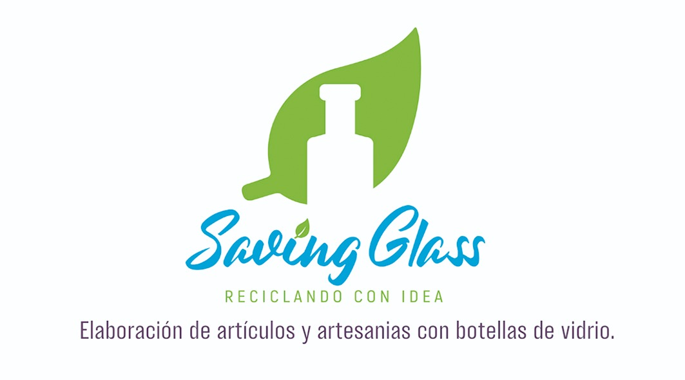

<div class="toolbar">
  
  <ul class="list">
    <li class="social-item" *ngFor="let network of socialMedia">
      <a class="link" [href]="network.link" target="_blank">
        
      </a>
    </li>
  </ul>
</div>
